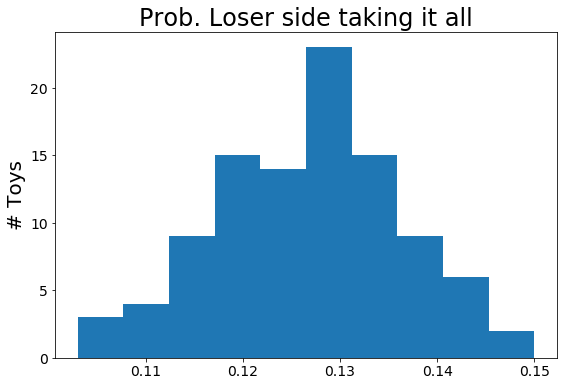
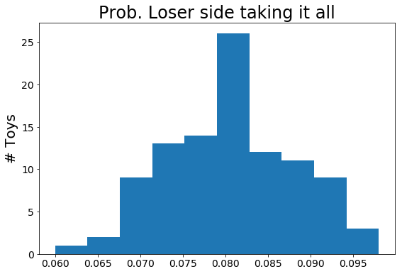

Coming from losers to take it all!
2021-05-03Today I came across a set of tweets about a particular phenomena that occurs in double elimination tournaments. The phenomena being when a player comes from loser side to win it all. This doesn't happen often, and neither do interesting tweets that I can dive into with statistical toys. Below I will attempt to build a toy model for top 8 double elimination tournaments and determine the probability for a player coming from losers side to winning the tournament. Additionally, we'll determine how probable it is for a set of 33 tournaments to occur without this.
Promised myself I would make zero suggestions on format improvements. However, 33 events in a row is 33 events in a row. When do we need to start talking about this? Now? The next event? If it gets to 50 in a row? If we go the whole year again?
— Glenn - thegametwok (@thegametwok) May 3, 2021
For those who do not know fighting game tournaments are generally double elimination. Meaning you have to lose twice in tournament to be removed. There are in fact two brackets in double elimination tournaments; one bracket for winners, those who haven't lost, and the other for those who have lost once. This double bracket structure makes this an interesting problem, a simple sequential analysis won't cut it.
Grand finals.
We'll be begin with something easy, grand finals. Grand finals for a double elimination tournament can contain either one or two matches between players. One if the player in winners bracket wins the first match. Two if they lose. This sets up a very simple stats problem. For the player in losers to win they must win two matches back to back. If the players are equally skilled we can treat each match as a coin flip, where each player as a 50% probability a given game. To win two games in a row we take 50% * 50%. Meaning that for equally skilled players one can expect the player coming from losers to win about 25% of the time. This was pretty simple high school stats. We can build a small toy model for this where we essentially flip two coins. The results are essentially the same a before with a bit of variance.
The process of coming back from losers to win is pretty deal. This analysis proves as much, however this isn't what we're interested in. Let's now extent our analysis to top 8.
Top 8
Top 8 in a double elimination format has 4 players in winners and 4 players in losers. For the first round of play each pool plays against its self. The players on winners side pair off and the players in losers do the same. The losers from winners side get pushed to the losers bracket, while the losers from loser side exit the tournament. This happens one more time until the bracket has one player in winners side and two in losers. The two in losers face off, the winner of which plays against the player in winners side to determine the champion.
This situation is quite a bit more complicated than grand finals, but we can still produce an analytic estimate. Lets, again, assume that each player in our top 8 has equal probability to win against any other player. Looking from losers the brake down goes as follows(the percentage is probability that winner is coming from losers side): losers 1: 100%, Losers Quarter: 75% (at least one must survive), Losers Semi: 50%, Grand finials: 50% * 50%. This leaves us at about 9%. I should note that I didn't handle losers quarter and losers semi finals properly. The event where both players originally from losers win their loser quarter matches are not handled, this should bump up our estimate. Knowing this, I'd expect a player coming from losers to win about 12% of the time.
Using toy models, the model is given at the bottom of the page, we can run our very own top 8s. For the initial toys I'll be assuming each player has an equal probability to win any given match. I should note that is not realistic. Better players tend not to lose, let alone lose before top 8. Additionally, most if not all tournaments seed making it unlikely for strong players to face each other early in the bracket. That being said I ran 1000 tournaments with this set up. Of the 1000 103 were won by players from the losers bracket. Since we're working with toys it's nice to see the associated distribution, below is such a plot made up of 100 of these 1000 toy runs. From the plot one should expect a player to come from losers to win it all about 13% of the time.
The previous toy assumed all players had the same probability of winning, as stated before this is not reality. The next example sets the winners side players to have a staggered win probability from 0.65 to 0.5 in increments of 0.05. This change is pretty impactful. The average win rate of someone coming from losers to win grand finals is now ~8%.
Conclusion
While all this stats stuff is fun what do we make of Glenn's complaint? Is a run of 33 tournaments without a winner from loser's side highly unlikely or is it par for the course?
Using the results given above we can come to the following conclusions. If all players have the same chance of winning the probability that the winner comes from loser side is about 13%. Therefore the probability that the winner comes only from winner's side for 33 tournaments is (1.0-0.13)^33 = 0.01. About 1%. That would make this a fairly rare sequence of events. However, as we discussed earlier this is not reality. Each player does not have the same probability to win.
Using our second case we find the following: (1. - 0.08)^33 = 0.064. About 6.4% more than 6 times our 1st example. 6.4% is about 1/15 or, roughly speaking, getting heads 4 times in a row. Not so rare, but would definitely raise an eye brow.
Fortunately, we don't have to end there. The folks over at one frame link responded to the original tweet thread to give some stats. About 6.71% of tournaments in their data base have a player coming from losers to win it all. Using the same technique as before we see about a 10% chance to have a streak of 33 tournaments with a winner not coming from losers side. This is not so rare at all. In fact this is on par with getting 3 heads in a row.
This number is considerably less; of 3922 tournaments, 263 have started in top 8 losers and won the entire tournament.
— One Frame Link #BLM (@OneFrameLink) May 3, 2021
Or 6.71%. https://t.co/dnKsMRFktc
I don't know if this post will be helpful to Glenn or any tournament organizers, but it was a fun little write up for me. If you have any question or corrections please send them to me.
#toy model
def top8(winners, losers, verbose=False):
def match(p1, p2):
prob = p1
index = 1
alt_index = 2
if prob < p2:
prob = p2
index = 2
alt_index = 1
r = np.random.rand()
if r > (1-prob):
return index
return alt_index
#winners semi
indexw1, indexw_l1 = (0, 3) if match(winners[0], winners[3]) == 1 else (3, 0)
indexw2, indexw_l2 = (1, 2) if match(winners[1], winners[2]) == 1 else (2, 1)
#losers 1
indexl1 = 0 if match(losers[0], losers[3]) == 1 else 3
indexl2 = 1 if match(losers[1], losers[2]) == 1 else 2
###############
#winners final
indexw, indexw_l = (indexw1, indexw2) if match(winners[indexw1], winners[indexw2]) == 1 else (indexw2, indexw1)
#losers quarter
indexl1, w_o_l1 = (indexw_l1, 0) if match(winners[indexw_l1], losers[indexl1]) == 1 else (indexl1, 1)
indexl2, w_o_l2 = (indexw_l2, 0) if match(winners[indexw_l2], losers[indexl2]) == 1 else (indexl2, 1)
################
#losers semi
l1 = winners if w_o_l1 == 0 else losers
l2 = winners if w_o_l2 == 0 else losers
index_gl, _gl = (indexl1, 0) if match(l1[indexl1], l2[indexl2]) == 1 else (indexl2, 1)
gl = winners if _gl == 0 else losers
#grand finals
if match(winners[indexw], gl[index_gl]) == 2:
result = match(winners[indexw], gl[index_gl])
return _gl == 1 and result == 2
else:
return False